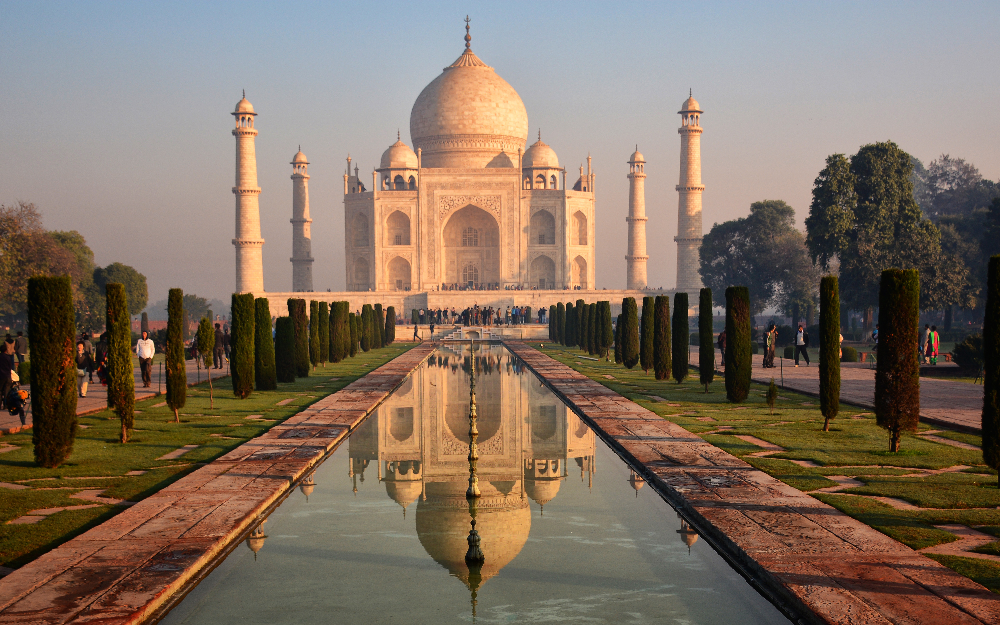
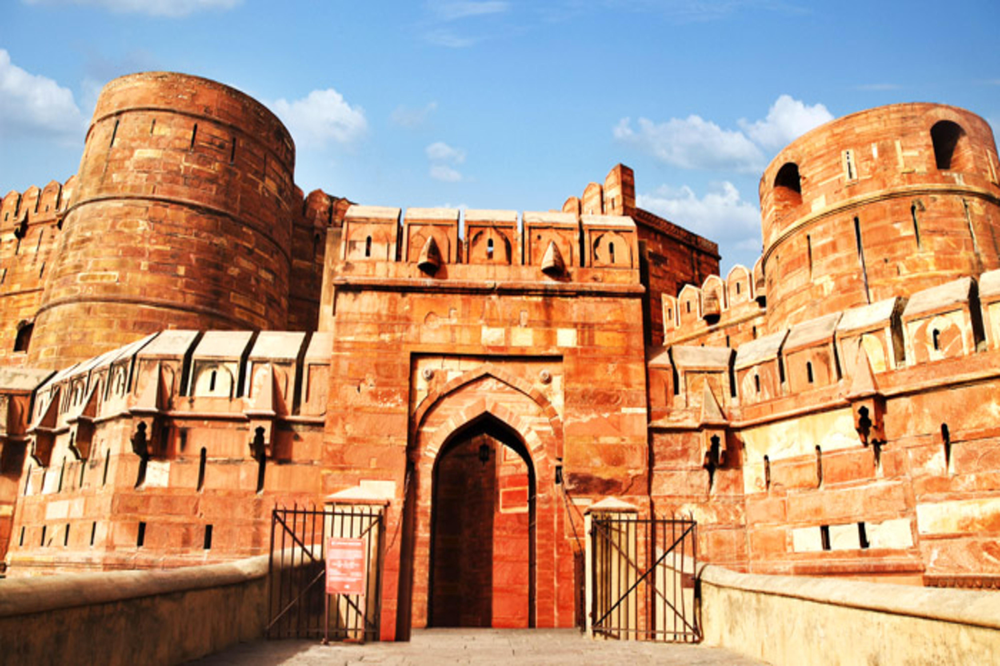
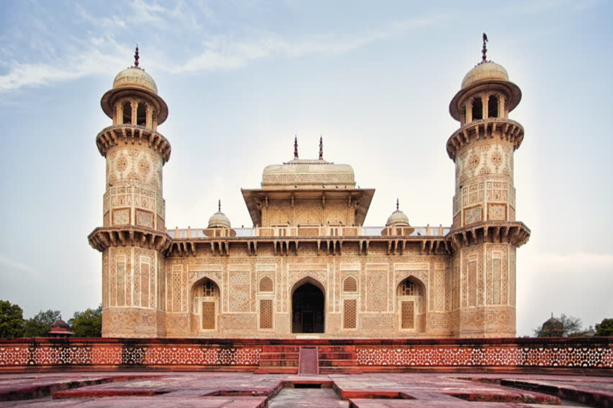
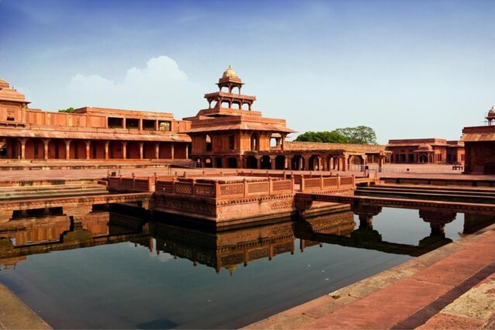

Places To Visit In India
There is a huge amount of places to vist in India. Only because of the golden culture and heritage India has.
lets start with our very first destination.
1.Agra
Agra is one of the most-visited cities in all of India. Once the capital of the Mughal Empire.
Taj Mahal

Agra is now home to the iconic structure known as the Taj Mahal. The white marble mausoleum was built in the 17th century, and it is widely regarded as a monument of love. The Taj Mahal is a world heritage site declared by UNESCO and one of the seven worders of the world. This is enough about Taj Mahal, now lets talk about another world heritage site declared by UNESCO and is present in Agra.It is the Agra fort.
The Agra Fort

The Agra Fort is also one of the beauties of Agra. Sightseeing here is like wandering around a city within a city. The most extraordinary building at Agra Fort is Jahangir Mahal, a massive palace that blends stunning Hindu-inspired features (like overhanging enclosed balconies) with Central Asian architectural elements (such as the signature pointed arches). Inside, tourists can see the gilded central court where royal women once passed their days.
If you are gona vist the Agra fort than do check these out - Anguri Bagh (a courtyard with puzzle piece-like outlines of gardens around water channels), Khas Mahal (a palace with pavilions made of white marble and red sandstone), Musamman Burj (an octagonal tower with intricate marble inlay work), and Diwan-i-Khas (a gathering hall featuring a pair of black and white marble thrones).
Itimad-Ud-Daulah's Tomb

This tomb was the first to be built in white marble instead of red sandstone, which officially marked the cessation of red sandstone from Mughal architecture. Itimad-ud-Daula is sometimes referred to as the baby Taj or a draft of the Taj Mahal, as it has been constructed with the same elaborate carvings and pietra dura (cut-out stone work) inlay techniques. The tomb is surrounded by beautiful gardens that make it the perfect site to relax in and experience the beauty of an old era that was rich in art, culture and history
Fatehpur Sikri

Fatehpur Sikri is one of the must-visit Agra destinations. It is a historical town in the District of Agra and had been the erstwhile capital city of many Mughal Emperors including Akbar. Before being the capital city, Sikri was a decrepit village. It was given the present name in commemoration of the victory of Emperor Akbar over Gujarat in the year 1573. Fatehpur Sikri town is situated on a rocky ridge which is 3 km long and 1 km wide and is styled in the architectures of Persia, India and Islamic heritage. Red sandstone, which was locally quarried, was used in the construction of the town. The town has seven gates with a boundary wall of 6 km. UNESCO declared this town as a World Heritage site. It ranks as one of the top tourist places in Agra which every visitor must add to their itinerary